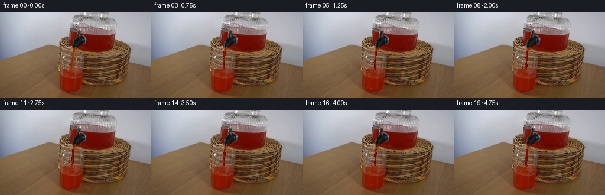
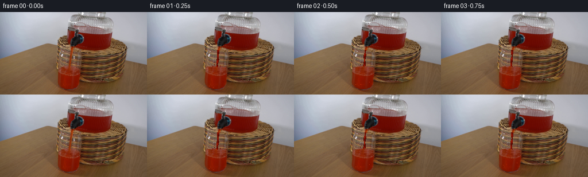

CODING AGENTS AS PIXEL WORLD MODELS
traex/DeepSeek-V4.1-Flash · 0066
点击播放 · 原生 RGB 像素
逐轮保存的候选
回放视频、检查图与代码变化。
每份候选均可单独播放。实际图片检查记录在下方工具轨迹中。
候选 01播放与检查图
点击播放 · 原生 RGB 像素


展开代码变化
--- 上一保存版本
+++ 本次保存版本
@@ -0,0 +1,221 @@
+from pathlib import Path
+
+import numpy as np
+from PIL import Image
+from scipy.ndimage import gaussian_filter, map_coordinates
+
+import artifact_io
+
+
+ROOT = Path(__file__).resolve().parent
+N_FRAMES = 20
+FPS = 4.0
+WIDTH = 256
+HEIGHT = 144
+
+
+def smoothstep(edge0, edge1, value):
+ value = np.clip((value - edge0) / (edge1 - edge0), 0.0, 1.0)
+ return value * value * (3.0 - 2.0 * value)
+
+
+def interpolate_background(frame, x0, x1, y0, y1):
+ """Estimate the basket behind the narrow stream from its two sides."""
+ result = frame.copy()
+ left = frame[y0:y1, x0 - 3:x0].mean(axis=1)
+ right = frame[y0:y1, x1:x1 + 3].mean(axis=1)
+ width = x1 - x0
+ for offset in range(width):
+ weight = offset / max(width - 1, 1)
+ color = left * (1.0 - weight) + right * weight
+ result[y0:y1, x0 + offset] = color
+ return result
+
+
+def render_stream(canvas, t):
+ """Draw a continuous, slightly wandering gravity-driven ribbon."""
+ y0, y1 = 66, 99
+ for y in range(y0, y1):
+ fall = (y - y0) / (y1 - y0)
+ center = 124.2 - 2.1 * fall
+ center += 0.45 * np.sin(y * 0.29 - t * 10.8) * (0.25 + 0.75 * fall)
+ width = 1.75 + 0.55 * np.sin(y * 0.43 - t * 12.4)
+ width += 0.35 * smoothstep(0.70, 1.0, fall)
+ if y >= y1 - 3:
+ width += 0.8 * smoothstep(y1 - 3, y1 - 1, y)
+
+ phase = y * 0.57 - t * 17.5
+ pulse = 0.5 + 0.5 * np.sin(phase)
+ core = np.array([112.0, 10.0, 1.5]) + pulse * np.array([22.0, 7.0, 2.0])
+
+ x_left = int(np.floor(center - width))
+ x_right = int(np.ceil(center + width))
+ for x in range(x_left, x_right + 1):
+ distance = abs(x + 0.5 - center) / max(width, 0.75)
+ if distance > 1.0:
+ continue
+ edge = smoothstep(0.55, 1.0, distance)
+ color = core * (1.0 - 0.30 * edge)
+
+ # A broken specular line travels down the left side of the ribbon.
+ highlight_x = center - width * 0.38
+ highlight = np.exp(-((x + 0.5 - highlight_x) / 0.70) ** 2)
+ highlight *= 0.35 + 0.65 * (0.5 + 0.5 * np.sin(phase + 1.2))
+ color += highlight * np.array([48.0, 18.0, 5.0])
+
+ # Pinch points make the otherwise solid stream read as moving liquid.
+ pinch = 0.80 + 0.20 * (0.5 + 0.5 * np.sin(y * 0.66 - t * 19.5))
+ canvas[y, x] = np.clip(color * pinch, 0.0, 255.0)
+
+
+def glass_surface_profile(x, t):
+ distance = np.abs(x - 121.0)
+ impact = np.exp(-(distance / 5.5) ** 2)
+ ring = np.exp(-((distance - 11.0) / 5.0) ** 2)
+ surface = 95.1 - 1.15 * impact * (0.5 + 0.5 * np.sin(t * 14.0 + 0.9))
+ surface += 0.32 * np.sin(0.56 * x - t * 16.0) * np.exp(-distance / 22.0)
+ surface -= 0.38 * ring * np.sin(t * 12.5 - 0.6)
+ return surface
+
+
+def render_glass_surface(canvas, source, t):
+ """Raise and ripple only the visible liquid surface."""
+ for x in range(102, 140):
+ surface = glass_surface_profile(x, t)
+ top = int(np.ceil(surface))
+ for y in range(max(92, top), 100):
+ depth = y - surface
+ if depth < -0.1:
+ continue
+ # Colors below the original surface provide a coherent liquid palette.
+ base_y = min(139, max(99, y + 3))
+ color = source[base_y, x].astype(float)
+ wave = 0.5 + 0.5 * np.sin(0.42 * x + 0.18 * y - t * 12.0)
+ color += (wave - 0.5) * np.array([9.0, 3.0, 0.8])
+ if depth < 0.75:
+ color *= 0.88
+ color += np.array([14.0, 5.0, 1.0])
+ canvas[y, x] = np.clip(color, 0.0, 255.0)
+
+ # Tiny meniscus glints, strongest at the point of impact.
+ for x in range(106, 138):
+ surface = glass_surface_profile(x, t)
+ y = int(round(surface))
+ glint = np.exp(-((x - 121.0) / 8.0) ** 2)
+ glint *= 0.5 + 0.5 * np.sin(0.83 * x - t * 16.7)
+ if glint > 0.67 and 92 <= y < 99:
+ color = canvas[y, x].astype(float)
+ canvas[y, x] = np.clip(color + glint * np.array([45.0, 22.0, 8.0]), 0, 255)
+
+
+def warp_liquid(canvas, source, mask, t, amplitude=0.42):
+ """Apply a small optical-flow-like circulation inside the red liquid."""
+ yy, xx = np.indices((HEIGHT, WIDTH), dtype=float)
+ dx = amplitude * np.sin(yy * 0.25 - t * 7.2 + xx * 0.055)
+ dy = 0.22 * amplitude * np.sin(xx * 0.31 + t * 5.1 - yy * 0.12)
+ warped = np.empty_like(source)
+ for channel in range(3):
+ warped[:, :, channel] = map_coordinates(
+ source[:, :, channel],
+ [yy + dy, xx + dx],
+ order=1,
+ mode="nearest",
+ )
+ blend = np.clip(mask.astype(float) * 0.72, 0.0, 1.0)[:, :, None]
+ canvas[:] = canvas * (1.0 - blend) + warped * blend
+
+
+def add_bubbles(canvas, t):
+ bubbles = (
+ (107.5, 132.0, 10.5, 0.0),
+ (132.0, 126.0, 13.0, 1.7),
+ (115.0, 137.0, 16.0, 3.1),
+ )
+ for x_base, start_y, travel, phase in bubbles:
+ age = (t * 1.15 + phase) % 1.0
+ y = start_y - age * travel
+ x = x_base + 0.9 * np.sin(age * 8.0 + phase)
+ if not (99.0 < y < 141.0):
+ continue
+ cx, cy = int(round(x)), int(round(y))
+ if not (101 <= cx <= 140):
+ continue
+ strength = np.sin(np.pi * age) ** 0.55
+ for ox, oy, weight in ((0, 0, 1.0), (-1, 0, 0.38), (1, 0, 0.38), (0, -1, 0.34)):
+ px, py = cx + ox, cy + oy
+ if not (99 <= py <= 142):
+ continue
+ color = canvas[py, px].astype(float)
+ tint = np.array([52.0, 31.0, 10.0]) if ox == 0 and oy == 0 else np.array([24.0, 12.0, 3.0])
+ canvas[py, px] = np.clip(color + tint * weight * strength, 0, 255)
+
+
+def add_splash_droplets(canvas, t):
+ for index, (side, period, phase, height) in enumerate(
+ ((-1.0, 1.55, 0.12, 4.8), (1.0, 1.75, 0.54, 3.7), (-1.0, 2.10, 0.81, 2.7))
+ ):
+ age = ((t + phase) / period) % 1.0
+ if age > 0.56:
+ continue
+ u = age / 0.56
+ x = 121.0 + side * (1.7 + 5.6 * u)
+ y = 95.2 - height * np.sin(np.pi * u)
+ cx, cy = int(round(x)), int(round(y))
+ if 0 <= cy < HEIGHT and 0 <= cx < WIDTH:
+ color = np.array([130.0 + 10.0 * (1.0 - u), 19.0, 3.0])
+ canvas[cy, cx] = color
+ if cy + 1 < HEIGHT:
+ canvas[cy + 1, cx] = color * 0.68
+
+
+def build_frames():
+ source = np.asarray(Image.open(ROOT / "first_frame.png").convert("RGB"), dtype=np.uint8)
+ if source.shape != (HEIGHT, WIDTH, 3):
+ raise ValueError(f"unexpected first frame shape: {source.shape}")
+
+ base = source.astype(float)
+ r, g, b = base.transpose(2, 0, 1)
+ red = (r > 68.0) & (r > g * 1.52) & (r > b * 1.62)
+
+ yy, xx = np.indices((HEIGHT, WIDTH))
+ dispenser_mask = red & (xx >= 145) & (xx <= 194) & (yy >= 37) & (yy <= 67)
+ glass_mask = red & (xx >= 100) & (xx <= 141) & (yy >= 99) & (yy <= 142)
+
+ stream_background = interpolate_background(base, 118, 130, 67, 96)
+ frames = [source.copy()]
+
+ for index in range(1, N_FRAMES):
+ t = index / FPS
+ canvas = base.copy()
+
+ # Preserve the photographic reservoir while giving its liquid a faint circulation.
+ warp_liquid(canvas, base, dispenser_mask, t, amplitude=0.30)
+ warp_liquid(canvas, base, glass_mask, t, amplitude=0.48)
+
+ # Rebuild only the narrow tap-to-glass corridor, leaving its edges photographic.
+ corridor = np.zeros((HEIGHT, WIDTH), dtype=bool)
+ corridor[67:97, 118:130] = True
+ canvas[corridor] = stream_background[corridor]
+ render_stream(canvas, t)
+ render_glass_surface(canvas, base, t)
+ add_bubbles(canvas, t)
+ add_splash_droplets(canvas, t)
+
+ # Very light sensor texture avoids a frozen plate outside the liquid.
+ grain = gaussian_filter(np.random.default_rng(4100 + index).normal(0.0, 0.55, (HEIGHT, WIDTH)), 0.55)
+ canvas += grain[:, :, None]
+
+ frames.append(np.clip(np.rint(canvas), 0, 255).astype(np.uint8))
+
+ return np.stack(frames, axis=0)
+
+
+def main():
+ frames = build_frames()
+ frames[0] = np.asarray(Image.open(ROOT / "first_frame.png").convert("RGB"), dtype=np.uint8)
+ artifact_io.save(frames, ROOT)
+ print(f"saved {len(frames)} frames at {WIDTH}x{HEIGHT}, {FPS:g} fps")
+
+
+if __name__ == "__main__":
+ main()
候选 02播放与检查图
点击播放 · 原生 RGB 像素
展开代码变化
--- 上一保存版本
+++ 本次保存版本
@@ -32,9 +32,10 @@
return result
-def render_stream(canvas, t):
+def render_stream(canvas, t, surface_y):
"""Draw a continuous, slightly wandering gravity-driven ribbon."""
- y0, y1 = 66, 99
+ y0 = 66
+ y1 = int(np.ceil(surface_y + 1.5))
for y in range(y0, y1):
fall = (y - y0) / (y1 - y0)
center = 124.2 - 2.1 * fall
@@ -72,7 +73,8 @@
distance = np.abs(x - 121.0)
impact = np.exp(-(distance / 5.5) ** 2)
ring = np.exp(-((distance - 11.0) / 5.0) ** 2)
- surface = 95.1 - 1.15 * impact * (0.5 + 0.5 * np.sin(t * 14.0 + 0.9))
+ fill_rise = 0.72 * t
+ surface = 95.1 - fill_rise - 1.15 * impact * (0.5 + 0.5 * np.sin(t * 14.0 + 0.9))
surface += 0.32 * np.sin(0.56 * x - t * 16.0) * np.exp(-distance / 22.0)
surface -= 0.38 * ring * np.sin(t * 12.5 - 0.6)
return surface
@@ -83,7 +85,7 @@
for x in range(102, 140):
surface = glass_surface_profile(x, t)
top = int(np.ceil(surface))
- for y in range(max(92, top), 100):
+ for y in range(max(88, top), 100):
depth = y - surface
if depth < -0.1:
continue
@@ -150,7 +152,7 @@
canvas[py, px] = np.clip(color + tint * weight * strength, 0, 255)
-def add_splash_droplets(canvas, t):
+def add_splash_droplets(canvas, t, surface_y):
for index, (side, period, phase, height) in enumerate(
((-1.0, 1.55, 0.12, 4.8), (1.0, 1.75, 0.54, 3.7), (-1.0, 2.10, 0.81, 2.7))
):
@@ -159,7 +161,7 @@
continue
u = age / 0.56
x = 121.0 + side * (1.7 + 5.6 * u)
- y = 95.2 - height * np.sin(np.pi * u)
+ y = surface_y - height * np.sin(np.pi * u)
cx, cy = int(round(x)), int(round(y))
if 0 <= cy < HEIGHT and 0 <= cx < WIDTH:
color = np.array([130.0 + 10.0 * (1.0 - u), 19.0, 3.0])
@@ -196,10 +198,11 @@
corridor = np.zeros((HEIGHT, WIDTH), dtype=bool)
corridor[67:97, 118:130] = True
canvas[corridor] = stream_background[corridor]
- render_stream(canvas, t)
+ surface_y = glass_surface_profile(121, t)
+ render_stream(canvas, t, surface_y)
render_glass_surface(canvas, base, t)
add_bubbles(canvas, t)
- add_splash_droplets(canvas, t)
+ add_splash_droplets(canvas, t, surface_y)
# Very light sensor texture avoids a frozen plate outside the liquid.
grain = gaussian_filter(np.random.default_rng(4100 + index).normal(0.0, 0.55, (HEIGHT, WIDTH)), 0.55)
候选 03播放与检查图
可观测工具轨迹
实际执行的命令与返回图片。
命令 1exit 0
/bin/bash -c "pwd && rg --files -g '"'!*.mp4'"' -g '"'!*.webm'"' | sed -n '1,120p'"
命令 2exit 0
/bin/bash -c "sed -n '1,240p' prompt.txt"
命令 3exit 0
/bin/bash -c "sed -n '1,280p' GENERATION_RULES.md"
命令 4exit 0
/bin/bash -c "find . -maxdepth 2 -type f -printf '%p %s bytes\\n' | sort"
命令 5exit 0
/bin/bash -c "sed -n '1,260p' artifact_io.py"
命令 6exit 0
/bin/bash -c "sed -n '1,240p' player_template.html"
命令 7exit 0
/bin/bash -c "python - <<'PY'
from PIL import Image
from collections import Counter
im=Image.open('first_frame.png').convert('RGB')
print('size', im.size, 'mode', im.mode)
a=list(im.getdata())
print('top colors', Counter(a).most_common(20))
print('bbox non-white', Image.eval(im, lambda p: 255-p).getbbox())
PY"命令 8exit 0
/bin/bash -c "python - <<'PY'
from PIL import Image
import numpy as np
im=np.array(Image.open('first_frame.png').convert('RGB'))
q=Image.fromarray(im).quantize(colors=24, method=Image.Quantize.MEDIANCUT)
p=np.array(q)
pal=np.array(q.getpalette()).reshape(-1,3)[:24]
for i,c in enumerate(pal):
ys,xs=np.where(p==i)
if len(xs):
print(f'{i:2d} n={len(xs):5d} rgb={tuple(c)} bbox=({xs.min():3d},{ys.min():3d})-({xs.max():3d},{ys.max():3d}) mean=({xs.mean():.1f},{ys.mean():.1f})')
PY"命令 9exit 0
/bin/bash -c "python - <<'PY'
from PIL import Image
im=Image.open('first_frame.png')
im.resize((768,432), Image.Resampling.NEAREST).save('.tmp/first_frame_3x.png')
PY"命令 10exit 0
/bin/bash -c "python - <<'PY'
from PIL import Image
import numpy as np, colorsys
im=np.array(Image.open('first_frame.png').convert('RGB')).astype(float)
# downsample 2x2 means
im=im.reshape(72,2,128,2,3).mean((1,3))
for y,row in enumerate(im):
s=''
for r,g,b in row:
mx=max(r,g,b); mn=min(r,g,b); v=mx; sat=(mx-mn)/mx if mx else 0
if sat>.35 and r>g*1.45 and r>b*1.8: c='R' if r<150 else 'r'
elif r>b*1.20 and g>b*1.05 and sat>.12: c='B' if v<130 else 'b'
elif sat<.10:
c=' ' if v>225 else ('.' if v>190 else ('o' if v>145 else ('x' if v>90 else '#')))
elif v<50: c='#'
else: c='+' if sat>.2 else '-'
s+=c
print(f'{y*2:3d} '+s)
PY"命令 11exit 0
/bin/bash -c "python - <<'PY'
from PIL import Image
import numpy as np
im=np.array(Image.open('first_frame.png').convert('RGB')).astype(float)
# crop to central scene and print 2x2 classifications with 128 columns
for y in range(0,144,2):
s=''
for x in range(0,256,2):
a=im[y:y+2,x:x+2].mean((0,1)); r,g,b=a
mx=a.max(); mn=a.min(); sat=(mx-mn)/(mx+1e-6)
if r>90 and r>g*1.6 and r>b*1.8: c='R'
elif r>80 and g>45 and r>g*1.2 and g>b*1.35: c='B' # brown
elif sat<.08: c='.' if mx>210 else (' ' if mx>175 else ('o' if mx>120 else '#'))
elif b>r*1.08: c='c' # cool/glass
else: c='+'
s+=c
print(s)
PY"命令 12exit 0
/bin/bash -c "python - <<'PY'
from PIL import Image
import numpy as np
from scipy.ndimage import label, binary_opening, binary_closing
im=np.array(Image.open('first_frame.png').convert('RGB')).astype(float)
r,g,b=im.transpose(2,0,1)
for name,mask in {
'red': (r>70)&(r>g*1.5)&(r>b*1.5),
'redcore': (r>90)&(r>g*2.0)&(r>b*2.0),
'brown': (r>70)&(r>g*1.15)&(g>b*1.18)&(r<180),
'cool': (b>r*1.03)&(b>g*1.02),
'bright': (r+g+b>660),
'dark': (r+g+b<180),
}.items():
m=binary_opening(mask,np.ones((2,2)))
lab,n=label(m)
sizes=np.bincount(lab.ravel())[1:]
print(name, 'n',mask.sum(),'components')
for i in np.argsort(sizes)[-8:][::-1]+1:
ys,xs=np.where(lab==i)
print(' ',sizes[i-1], (xs.min(),ys.min(),xs.max(),ys.max()), 'mean', im[ys,xs].mean(0).round(1))
PY"命令 13exit 0
/bin/bash -c "python - <<'PY'
from PIL import Image
import numpy as np
im=np.array(Image.open('first_frame.png').convert('RGB')).astype(float)
lum=im@np.array([.2126,.7152,.0722])
chars=' .:-=+*#%@'
for y in range(0,144,2):
s=''
for x in range(0,256,2):
v=lum[y:y+2,x:x+2].mean(); s+=chars[min(9,int(v/256*10))]
print(f'{y:3d} {s}')
PY"命令 14exit 0
/bin/bash -c "python - <<'PY'
from PIL import Image
import numpy as np
im=np.array(Image.open('first_frame.png').convert('RGB'))
# print exact RGB and luminance at selected x positions y=20..80
for y in range(20,81,4):
print('y',y, ' '.join(f'{x}:{tuple(im[y,x])}' for x in range(96,201,10)))
PY"命令 15exit 0
/bin/bash -c "python - <<'PY'
from PIL import Image
import numpy as np
im=np.array(Image.open('first_frame.png').convert('RGB')).astype(float)
r,g,b=im.transpose(2,0,1)
# visually useful coarse color-mask map at 1x in central crop x80..230,y20..130: char each pixel-ish through 2x2
# categories red, brown, neutral, cyan
for y in range(20,131,2):
s=''
for x in range(80,231,2):
a=im[y:y+2,x:x+2].mean((0,1)); r,g,b=a
if r>75 and r>g*1.7 and r>b*1.8: c='R'
elif r>65 and r>g*1.15 and g>b*1.25 and r<180: c='B'
elif b>r*1.07 and b>g*1.03: c='C'
elif max(a)<50: c='#'
elif max(a)<100: c='x'
elif max(a)>205: c='.'
else: c='+'
s+=c
print(f'{y:3d} {s}')
PY"命令 16exit 0
/bin/bash -c "python - <<'PY'
from PIL import Image
import numpy as np
im=np.array(Image.open('first_frame.png').convert('RGB')).astype(float)
r,g,b=im.transpose(2,0,1)
# candidate red liquidity by y rows: ranges and counts
red=(r>75)&(r>g*1.55)&(r>b*1.65)
for y in range(24,144,2):
xs=np.where(red[y])[0]
# segments len>=2
seg=[]
if len(xs):
cuts=np.where(np.diff(xs)>1)[0]
starts=np.r_[0,cuts+1]; ends=np.r_[cuts,len(xs)-1]
seg=[(int(xs[s]),int(xs[e])) for s,e in zip(starts,ends) if e-s+1>=2]
print(y,len(xs),seg[:12])
PY"命令 17exit 0
/bin/bash -c "python - <<'PY'
from PIL import Image
import numpy as np
im=np.array(Image.open('first_frame.png').convert('RGB'))
# quantized grid x90..230 y30..75 each pixel grouped 2x2
pal=[(15,15,15),(40,30,25),(80,60,40),(110,85,60),(140,110,80),(180,160,140),(110,10,0),(140,30,5),(180,80,30),(200,180,180),(150,160,175),(185,188,195),(220,220,225)]
chars='0123456789abc'
P=np.array(pal)
for y in range(28,76,2):
s=''
for x in range(90,231,2):
a=im[y:y+2,x:x+2].mean((0,1))
d=((P-a)**2).sum(1)
s+=chars[d.argmin()]
print(f'{y:3d} {s}')
PY"命令 18exit 0
/bin/bash -c "python - <<'PY'
from PIL import Image
import numpy as np
im=np.array(Image.open('first_frame.png').convert('RGB')).astype(float)
r,g,b=im.transpose(2,0,1)
red=(r>75)&(r>g*1.55)&(r>b*1.65)
# print red runs every row 32-75 exact
for y in range(30,76):
xs=np.where(red[y])[0]
cuts=np.where(np.diff(xs)>1)[0] if len(xs) else []
starts=np.r_[0,cuts+1] if len(xs) else []
ends=np.r_[cuts,len(xs)-1] if len(xs) else []
seg=[(int(xs[s]),int(xs[e])) for s,e in zip(starts,ends) if e-s+1>=2]
print(f'{y:2d}',seg)
PY"命令 19exit 0
/bin/bash -c "python - <<'PY'
from PIL import Image
import numpy as np
im=np.array(Image.open('first_frame.png').convert('RGB'))
for y in range(28,76,2):
print('y',y)
for x in range(100,221,4):
c=im[y,x]
print(f'{x}:{c[0]:02x}{c[1]:02x}{c[2]:02x}',end=' ')
print()
PY"命令 20exit 0
/bin/bash -c "python - <<'PY'
from PIL import Image
import numpy as np
from scipy.ndimage import sobel, gaussian_filter, label
im=np.array(Image.open('first_frame.png').convert('RGB')).astype(float)
g=gaussian_filter(im.mean(2),1)
e=np.hypot(sobel(g,0),sobel(g,1))
# strongest edge per row in x ranges
for y in range(0,144,2):
vals=[]
for x0,x1 in [(0,100),(95,150),(145,200),(195,256)]:
idx=x0+np.argsort(e[y,x0:x1])[-4:]
vals.append(' '.join(f'{x}:{e[y,x]:.0f}' for x in sorted(idx)))
print(f'{y:3d}', ' | '.join(vals))
PY"命令 21exit 0
/bin/bash -c "python - <<'PY'
from PIL import Image
import numpy as np
im=np.array(Image.open('first_frame.png').convert('RGB'))
# print pixel rows as ANSI truecolor blocks (2x1 pixels) for central region only
# use escape sequences; output should render in terminal if supported
for y in range(20,145,2):
s=''
for x in range(80,236,2):
r,g,b=im[y:y+2,x:x+2].mean((0,1)).astype(int)
s+=f'\\x1b[48;2;{r};{g};{b}m '
print(f'{y:3d} '+s+'\\x1b[0m')
PY"命令 22exit 0
/bin/bash -c "python - <<'PY'
from PIL import Image
import numpy as np
im=np.array(Image.open('first_frame.png').convert('RGB'))
# produce 4 vertical slices as ascii category, 1 pixel each; x 90..230 y 20..100
for y in range(20,100):
s=''
for x in range(90,231):
r,g,b=im[y,x]
if r>80 and r>g*1.7 and r>b*1.8: c='R'
elif r>65 and r>g*1.15 and g>b*1.25: c='B'
elif b>r*1.07 and b>g*1.03: c='C'
elif r+g+b<150: c='#'
elif r+g+b<300: c='x'
elif r+g+b>650: c='.'
else: c='+'
s+=c
print(f'{y:3d} {s}')
PY"命令 23exit 0
/bin/bash -c 'python generate.py'
命令 24exit 0
/bin/bash -c "ls -lh frames/*.png pixels.npz inspection.png transition_check.png index.html && python - <<'PY'
import json, pathlib
p=pathlib.Path('pixels.npz'); print('npz',p.stat().st_size)
import numpy as np
z=np.load(p); print('pixels',z['pixels'].shape,z['pixels'].dtype)
PY"命令 25exit 0
/bin/bash -c "python - <<'PY'
from PIL import Image, ImageDraw
import numpy as np
frames=[Image.open(f'frames/{i:02d}.png').convert('RGB') for i in range(20)]
# pour crop x90..215 y25..143, 4x nearest; 5 columns, 4 rows
w,h=125,118
sheet=Image.new('RGB',(w*4*4,(h*4+20)*5),(20,23,28))
d=ImageDraw.Draw(sheet)
for i,im in enumerate(frames):
x=(i%4)*w*4; y=(i//4)*(h*4+20)
d.text((x+4,y+3),f'{i:02d} {i/4:.2f}s',fill='white')
sheet.paste(im.crop((90,25,215,143)).resize((w*4,h*4),Image.Resampling.NEAREST),(x,y+20))
sheet.save('.tmp/pour_sheet.png')
print(sheet.size)
PY"命令 26exit 0
/bin/bash -c "python - <<'PY'
from PIL import Image
import numpy as np
src=np.array(Image.open('first_frame.png').convert('RGB'))
f0=np.array(Image.open('frames/00.png').convert('RGB'))
print('frame0 identical', np.array_equal(src,f0), 'max diff', np.abs(src.astype(int)-f0.astype(int)).max())
frames=np.stack([np.array(Image.open(f'frames/{i:02d}.png').convert('RGB')) for i in range(20)])
d=np.abs(np.diff(frames.astype(np.int16),axis=0))
print('diff mean/max per transition')
for i,x in enumerate(d): print(i+1, round(float(x.mean()),3), int(x.max()), int((x>3).sum()))
print('unique colors',len(np.unique(frames.reshape(-1,3),axis=0)))
PY"命令 27exit 0
/bin/bash -c "python - <<'PY'
from PIL import Image
import numpy as np
for fi in [0,1,10,19]:
im=np.array(Image.open(f'frames/{fi:02d}.png').convert('RGB')).astype(float)
r,g,b=im.transpose(2,0,1)
red=(r>70)&(r>g*1.55)&(r>b*1.65)
print('\\nFRAME',fi)
for y in range(30,100,2):
xs=np.where(red[y])[0]
if len(xs):
cuts=np.where(np.diff(xs)>1)[0]
starts=np.r_[0,cuts+1]; ends=np.r_[cuts,len(xs)-1]
seg=[(int(xs[s]),int(xs[e])) for s,e in zip(starts,ends) if e-s+1>=2]
else: seg=[]
print(f'{y:3d}',seg)
PY"命令 28exit 0
/bin/bash -c "python - <<'PY'
from PIL import Image
import numpy as np
# inspect pixel bounding box of main dark/red dispenser outline on source
im=np.array(Image.open('first_frame.png').convert('RGB')).astype(float)
r,g,b=im.transpose(2,0,1)
# print 2x coarse image with symbols thresholded to better see outline
for y in range(20,76):
s=''
for x in range(108,205):
rr,gg,bb=im[y,x]
v=(rr+gg+bb)/3
if rr>80 and rr>gg*1.7 and rr>bb*1.8: c='R'
elif bb>rr*1.07 and bb>gg*1.03: c='C'
elif v<20:c='#'
elif v<40:c='X'
elif v<70:c='x'
elif v<110:c='+'
elif v<150:c='-'
elif v<180:c=':'
else:c='.'
s+=c
print(f'{y:2d} {s}')
PY"命令 29exit 0
/bin/bash -c "python - <<'PY'
from PIL import Image
import numpy as np
# output original and frames side-by-side as scaled crop using ascii symbols? inspect local difference bbox and values
src=np.array(Image.open('first_frame.png').convert('RGB')).astype(float)
for fi in [1,10,19]:
im=np.array(Image.open(f'frames/{fi:02d}.png').convert('RGB')).astype(float)
d=np.abs(im-src).max(2)
print('frame',fi,'changed',np.sum(d>2),'bbox',np.where(d>2)[1].min(),np.where(d>2)[0].min(),np.where(d>2)[1].max(),np.where(d>2)[0].max())
# changed pixels central corridor
for y in range(64,101,2):
xs=np.where(d[y]>2)[0]
print(y, xs[:5],xs[-5:] if len(xs) else [],len(xs))
PY"命令 30exit 0
/bin/bash -c "python - <<'PY'
from PIL import Image
import numpy as np
# list bright cyan/glint coordinates in dispenser and glass area
im=np.array(Image.open('first_frame.png').convert('RGB')).astype(float)
r,g,b=im.transpose(2,0,1)
for region,name in [((100,205,20,70),'disp'),((95,145,80,143),'glass')]:
x0,x1,y0,y1=region
print(name)
for y in range(y0,y1):
mask=(b[y]>r[y]*1.2)&(b[y]>g[y]*1.1)&(b[y]>60)
xs=np.where(mask[x0:x1])[0]+x0
if len(xs):
# runs
cuts=np.where(np.diff(xs)>1)[0]; st=np.r_[0,cuts+1]; en=np.r_[cuts,len(xs)-1]
seg=[(int(xs[s]),int(xs[e])) for s,e in zip(st,en) if e-s+1>=1]
if seg: print(y,seg)
PY"命令 31exit 0
/bin/bash -c "python - <<'PY'
from PIL import Image
import numpy as np
im=np.array(Image.open('first_frame.png').convert('RGB')).astype(float)
r,g,b=im.transpose(2,0,1)
# inspect top rows silhouette: non-background based on local color variance? print colors and edges x=105..200 y=20..40
for y in range(20,42):
s=''
for x in range(105,201):
rr,gg,bb=im[y,x]; v=(rr+gg+bb)/3
# pixels differ from background by reddishness / darkness
if v<80:c='#'
elif v<120:c='x'
elif rr-bb>15:c='r'
elif rr-bb>7:c='+'
elif v>200:c=' '
elif v>185:c='.'
else:c='-'
s+=c
print(f'{y:2d} {s}')
PY"命令 32exit 0
/bin/bash -c "python - <<'PY'
from PIL import Image
import numpy as np
im=np.array(Image.open('first_frame.png').convert('RGB'))
# save a few useful crops via nearest for potential own inspection not visual
for name,box in [('disp',(105,15,210,80)),('glass',(95,65,215,144)),('center',(110,25,205,110))]:
Image.fromarray(im[box[1]:box[3],box[0]:box[2]]).resize(((box[2]-box[0])*5,(box[3]-box[1])*5),Image.Resampling.NEAREST).save(f'.tmp/{name}_5x.png')
PY"命令 33exit 0
/bin/bash -c "python - <<'PY'
from PIL import Image
import numpy as np
im=np.array(Image.open('first_frame.png').convert('RGB')).astype(float)
# display scene as colored emoji blocks? identify each 4x4 block mean color via closest named category and symbols
# also print actual sampled RGB on a grid for mental mapping
for y in range(20,145,5):
vals=[]
for x in range(100,221,10):
r,g,b=im[y,x].astype(int)
vals.append(f'{x}:({r:3},{g:3},{b:3})')
print(f'y={y:3}', ' '.join(vals))
PY"命令 34exit 0
/bin/bash -c "python - <<'PY'
from PIL import Image
import numpy as np
for y in [70,75,80,85,90,95,96,97,98,100,110,120]:
print('y',y)
for x in [120,121,122,123,124,125,126,127,128]:
vals=[]
for i in range(20):
im=np.array(Image.open(f'frames/{i:02d}.png').convert('RGB'))
vals.append(int(im[y,x].mean()))
print(x, min(vals),max(vals),np.std(vals), vals[:6])
PY"命令 35exit 0
/bin/bash -c 'python generate.py'
命令 36exit 1
/bin/bash -c "python - <<'PY'
from PIL import Image
import numpy as np, json, base64
frames=np.stack([np.array(Image.open(f'frames/{i:02d}.png').convert('RGB')) for i in range(20)])
src=np.array(Image.open('first_frame.png').convert('RGB'))
assert frames.shape==(20,144,256,3) and frames.dtype==np.uint8
assert np.array_equal(frames[0],src)
assert len(np.unique(frames[0]))>1000
assert np.unique(frames[1:]).size>1000
z=np.load('pixels.npz')['pixels']
assert z.shape==(144,256,20)
packed=(frames[:,:,:,0].astype(np.uint32)<<16)|(frames[:,:,:,1].astype(np.uint32)<<8)|frames[:,:,:,2].astype(np.uint32)
assert np.array_equal(z,packed.transpose(1,2,0))
html=open('index.html').read()
assert '__DATA__' not in html and 'window.__pixelReady' in html
# continuity metrics
d=np.abs(np.diff(frames.astype(np.int16),axis=0))
print('PASS')
print('frames',frames.shape,'fps',4,'duration',len(frames)/4)
print('frame0_exact',np.array_equal(frames[0],src))
print('transition_mean_range',float(d.mean()),'max',int(d.max()))
print('changed_pixels_per_transition',int(np.median((d.max(3)>2).sum())))
print('files', {p: __import__('pathlib').Path(p).stat().st_size for p in ['pixels.npz','index.html','inspection.png','transition_check.png']})
PY"命令 37exit 0
/bin/bash -c "python - <<'PY'
from PIL import Image
import numpy as np
frames=np.stack([np.array(Image.open(f'frames/{i:02d}.png').convert('RGB')) for i in range(20)])
src=np.array(Image.open('first_frame.png').convert('RGB'))
print(frames.shape, frames.dtype, np.array_equal(frames[0],src), np.abs(frames[0].astype(int)-src.astype(int)).max())
print('unique 0',len(np.unique(frames[0].reshape(-1,3),axis=0)),'unique rest',len(np.unique(frames[1:].reshape(-1,3),axis=0)))
PY"命令 38exit 0
/bin/bash -c "python - <<'PY'
from PIL import Image
import numpy as np
from pathlib import Path
frames=np.stack([np.array(Image.open(f'frames/{i:02d}.png').convert('RGB')) for i in range(20)])
src=np.array(Image.open('first_frame.png').convert('RGB'))
assert frames.shape==(20,144,256,3) and frames.dtype==np.uint8
assert np.array_equal(frames[0],src)
assert len(np.unique(frames[1:].reshape(-1,3),axis=0))>1000
z=np.load('pixels.npz')['pixels']
assert z.shape==(144,256,20)
packed=(frames[:,:,:,0].astype(np.uint32)<<16)|(frames[:,:,:,1].astype(np.uint32)<<8)|frames[:,:,:,2].astype(np.uint32)
assert np.array_equal(z,packed.transpose(1,2,0))
html=Path('index.html').read_text()
assert '__DATA__' not in html and 'window.__pixelReady' in html
assert len(list(Path('frames').glob('*.png')))==20
d=np.abs(np.diff(frames.astype(np.int16),axis=0))
print('PASS')
print('frames',frames.shape,'fps',4,'duration',len(frames)/4)
print('frame0_exact',np.array_equal(frames[0],src))
print('transition_mean',round(float(d.mean()),4),'max',int(d.max()))
print('changed_pixels_median',int(np.median((d.max(3)>2).sum())))
for p in ['pixels.npz','index.html','inspection.png','transition_check.png','generate.py']:
print(p,Path(p).stat().st_size,'bytes')
PY"保存候选 3 份；完成命令 38 次；可验证图片返回 0 张。原始 API 响应与完整日志保留在本地。